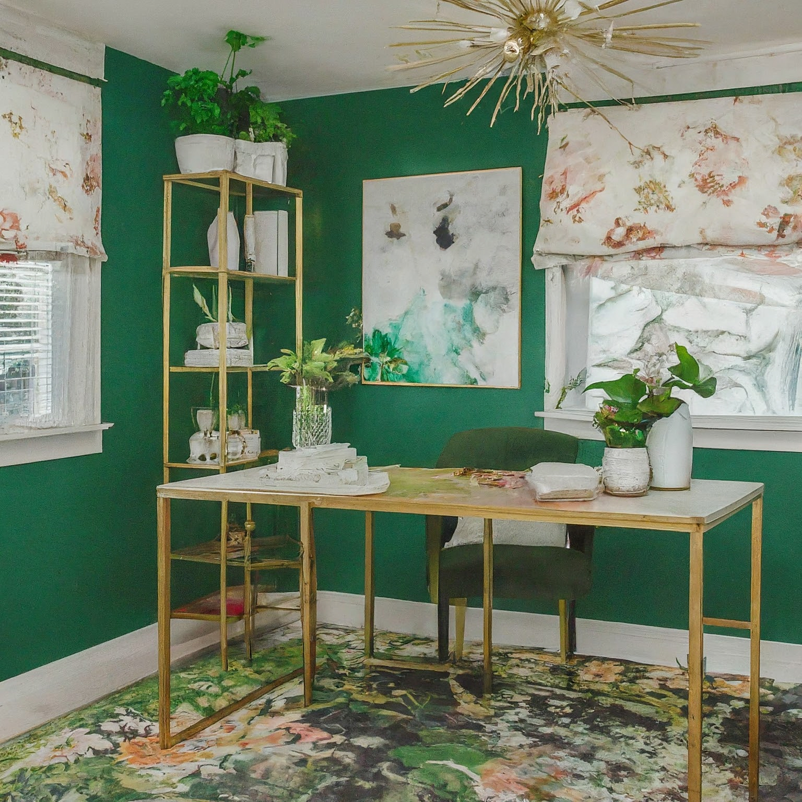
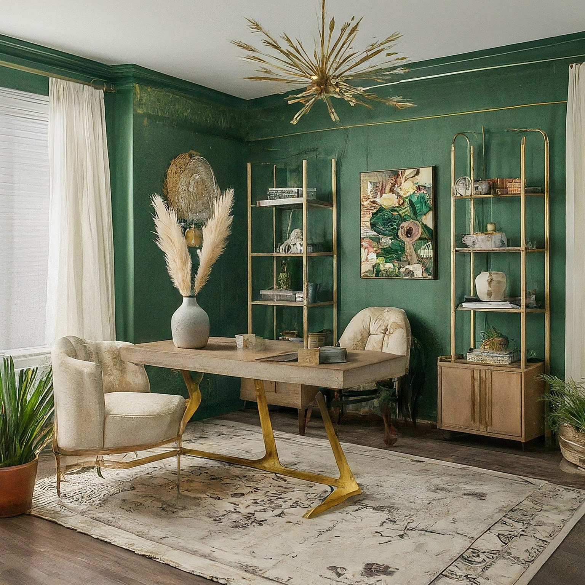

Art Deco Boho Home Office: Green, Florals & White

Art Deco Boho Home Office: Green, Florals & White
1. Overall Concept and Style:
This home office will be a harmonious blend of Art Deco glamour and Bohemian free-spiritedness, creating a workspace that is both sophisticated and inviting. The Art Deco influence will be visible through geometric patterns, luxurious materials (think velvet and brass), and a structured yet elegant layout. The Bohemian touch will soften the rigidity with natural textures, floral motifs, and a sense of comfortable eclecticism. The overall feeling should be creative, inspiring, and calming, allowing for focused work while nurturing a sense of well-being.
2. Color Scheme and Materials:
- Color Palette:
- Primary: White (Creamy White, Off-White) - for walls, large furniture pieces.
- Secondary: Emerald Green, Jade Green, Olive Green - for accent walls, upholstery, accessories.
- Accent: Gold/Brass - for hardware, lighting fixtures, decorative details.
- Floral Accents: Varying shades of green, white, and pops of contrasting colors (e.g., blush pink, deep burgundy, mustard yellow) within floral patterns.
- Materials:
- Walls: Creamy white paint with a slight sheen, potentially incorporating a geometric patterned wallpaper on one accent wall (e.g., fan or chevron pattern).
- Flooring: Light wood flooring (e.g., whitewashed oak or maple) or a large area rug with a geometric or floral design in muted green and white tones.
- Furniture: Mix of materials - velvet upholstery for the desk chair, rattan or wicker for storage baskets and side tables, wood with brass accents for the desk.
- Textiles: Velvet, linen, cotton, macrame, woven rugs.
- Hardware: Brass, antique brass, or gold.
3. Furniture and Layout:
- Desk: A white or light wood desk with clean, Art Deco-inspired lines. Consider a desk with brass hardware or legs. A curved desk edge could soften the geometric lines.
- Chair: A plush, emerald green velvet desk chair with brass legs or a swivel base. Comfort is paramount for long work hours.
- Storage:
- Bookshelves: A tall, white bookshelf with geometric detailing (e.g., stepped sides). Use brass or gold accents in the form of bookends or decorative objects.
- Cabinets: A small sideboard or cabinet with a lacquered finish in a deep green hue.
- Baskets: Rattan or wicker baskets for storing supplies and clutter, adding a bohemian touch.
- Seating Area: A comfortable armchair upholstered in a floral print fabric or a woven texture in a neutral color. Add a small, round side table with a brass finish for drinks and books. Consider a pouf or floor cushion for a relaxed vibe.
- Layout: Position the desk near a window to maximize natural light. The seating area should be placed away from the main workspace to provide a separate relaxation zone. Ensure adequate space for movement and circulation. Consider ergonomics when positioning the desk and chair.
4. Lighting Design:
- Natural Light: Prioritize maximizing natural light by keeping window coverings minimal and airy (e.g., sheer curtains or light linen drapes).
- Ambient Lighting:
- Chandelier: A small, Art Deco-inspired chandelier or pendant light in brass or gold to provide overall illumination. This should be the focal point.
- Floor Lamp: A standing floor lamp with a brass base and a fabric shade, placed near the seating area for task lighting and ambiance.
- Task Lighting:
- Desk Lamp: An adjustable desk lamp with a brass or gold finish for focused work. Choose a design that complements the Art Deco aesthetic.
- Accent Lighting:
- String Lights: Delicate string lights with warm white bulbs can add a touch of bohemian charm. Drape them around bookshelves or along the top of the walls.
- Candles/Scented Candles: Use candles with botanical scents to create a relaxing atmosphere. Place them on shelves, side tables, or the desk.
5. Decorative Elements:
- Wall Art:
- Geometric Prints: Art Deco-inspired geometric prints in gold and green tones.
- Botanical Prints: Framed botanical illustrations or vintage floral prints.
- Macrame Wall Hangings: A large macrame wall hanging to add texture and a bohemian vibe.
- Textiles:
- Rugs: A large area rug with a geometric or floral pattern in muted green and white tones.
- Cushions: Throw pillows in velvet, linen, and floral prints to add comfort and style to the seating area.
- Throws: A cozy throw blanket in a neutral color to drape over the armchair.
- Plants: Incorporate a variety of plants to bring life and freshness to the space. Consider trailing plants like pothos or spider plants, as well as larger potted plants like a fiddle-leaf fig or snake plant. Use decorative planters in brass, ceramic, or terracotta.
- Mirrors: A decorative mirror with an Art Deco frame to reflect light and create a sense of spaciousness.
- Accessories:
- Brass or Gold Accents: Vases, trays, bowls, and other decorative objects in brass or gold.
- Books: Display a curated collection of books with interesting covers.
- Crystals: Add crystals for their aesthetic and purported energetic properties.
- Vintage Items: Incorporate vintage items like a typewriter, a globe, or a decorative box to add character and personality.
6. Practical Considerations:
- Ergonomics: Ensure that the desk and chair are ergonomically sound to prevent strain and discomfort during long work hours. The monitor should be at eye level, and the keyboard and mouse should be within easy reach.
- Storage: Adequate storage is essential to keep the office clutter-free. Utilize bookshelves, cabinets, and baskets to organize supplies and paperwork.
- Cable Management: Implement a cable management system to keep cords organized and out of sight.
- Acoustics: Consider adding sound-absorbing materials to minimize noise distractions. This could include a thick area rug, upholstered furniture, or acoustic panels.
- Lighting Control: Install window treatments that allow you to control the amount of natural light entering the room.
- Accessibility: Ensure that the layout is accessible and allows for easy movement throughout the space.
- Personalization: Ultimately, the home office should reflect your personal style and preferences. Incorporate items that inspire you and make you feel comfortable and productive.
This detailed design plan offers a comprehensive vision for creating an Art Deco Bohemian home office with a green, floral, and white color scheme. By combining the elegance of Art Deco with the relaxed vibe of Bohemian style, this space will be both visually stunning and functionally efficient. Remember to adapt the plan to your specific needs and preferences to create a truly unique and inspiring workspace.

Art Deco Boho Home Office: Green, Florals & White - View 2

Art Deco Boho Home Office: Green, Florals & White - View 3

Art Deco Boho Home Office: Green, Florals & White - View 4